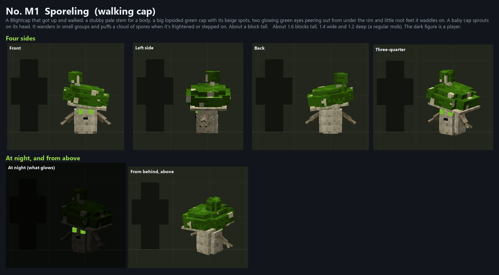
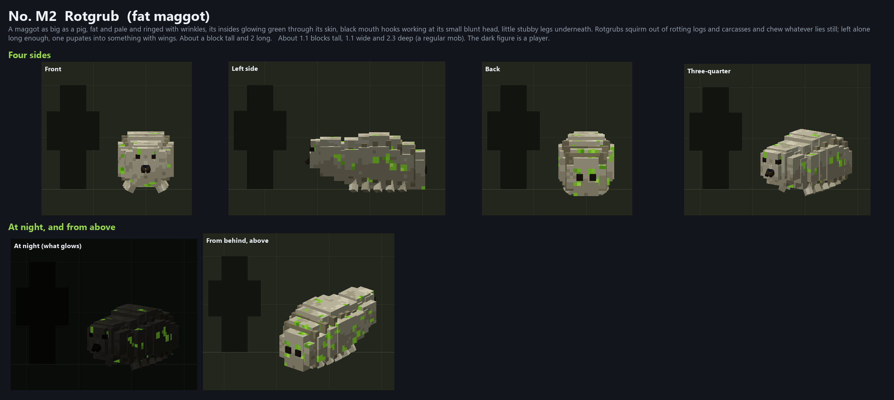
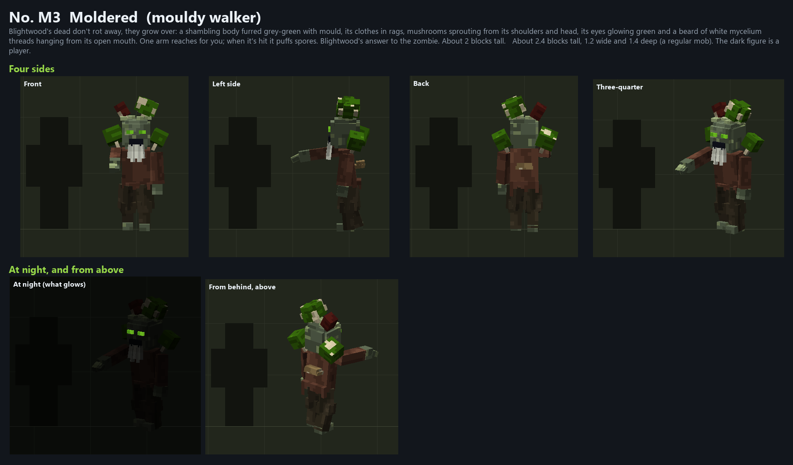
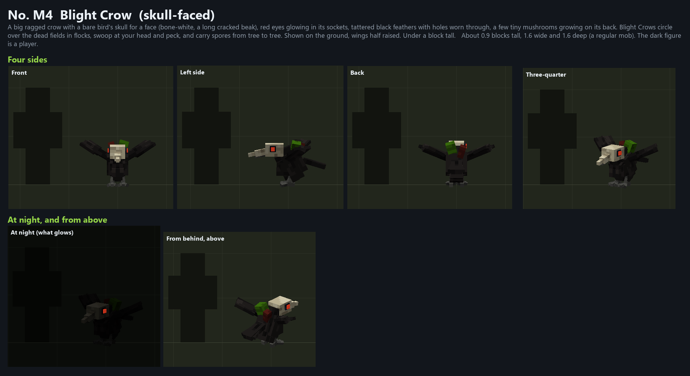
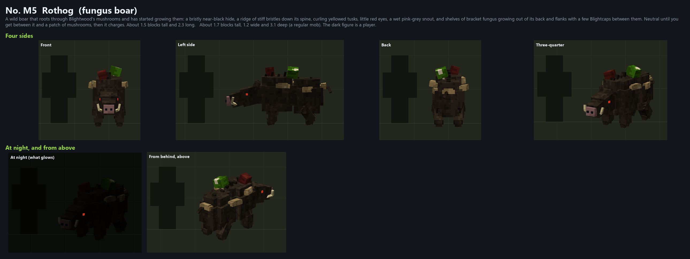

Five regular mobs that could live in Blightwood beside its rats and witches. Looks only. In the game: /dross showcase boss_designs blightwood.
A Blightcap that got up and walked: a stubby pale stem for a body, a big lopsided green cap with its beige spots, two glowing green eyes peering out from under the rim and little root feet it waddles on. A baby cap sprouts on its head. It wanders in small groups and puffs a cloud of spores when it's frightened or stepped on. About a block tall.

A maggot as big as a pig, fat and pale and ringed with wrinkles, its insides glowing green through its skin, black mouth hooks working at its small blunt head, little stubby legs underneath. Rotgrubs squirm out of rotting logs and carcasses and chew whatever lies still; left alone long enough, one pupates into something with wings. About a block tall and 2 long.

Blightwood's dead don't rot away, they grow over: a shambling body furred grey-green with mould, its clothes in rags, mushrooms sprouting from its shoulders and head, its eyes glowing green and a beard of white mycelium threads hanging from its open mouth. One arm reaches for you; when it's hit it puffs spores. Blightwood's answer to the zombie. About 2 blocks tall.

A big ragged crow with a bare bird's skull for a face (bone-white, a long cracked beak), red eyes glowing in its sockets, tattered black feathers with holes worn through, a few tiny mushrooms growing on its back. Blight Crows circle over the dead fields in flocks, swoop at your head and peck, and carry spores from tree to tree. Shown on the ground, wings half raised. Under a block tall.

A wild boar that roots through Blightwood's mushrooms and has started growing them: a bristly near-black hide, a ridge of stiff bristles down its spine, curling yellowed tusks, little red eyes, a wet pink-grey snout, and shelves of bracket fungus growing out of its back and flanks with a few Blightcaps between them. Neutral until you get between it and a patch of mushrooms, then it charges. About 1.5 blocks tall and 2.3 long.
